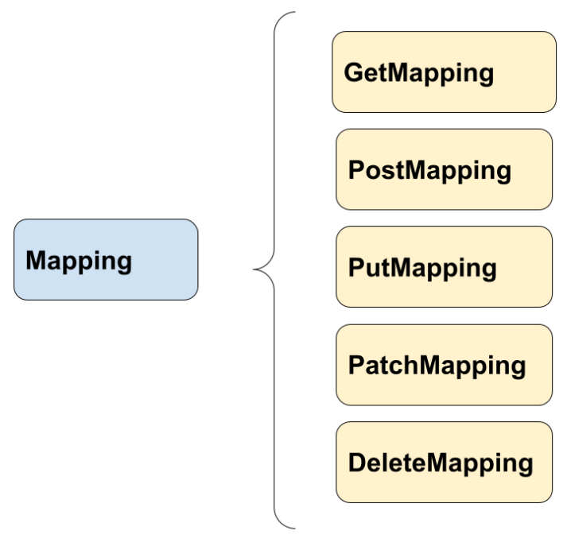

üîÜ API Rest
⚕️¿Qué es una API?
Una API (Application Programming Interface) es un conjunto de definiciones y protocolos que permite que diferentes aplicaciones o sistemas se comuniquen entre sí. Es decir, una API actúa como intermediario que permite que dos programas interactúen y compartan información o funcionalidades.
Las APIs son esenciales en el desarrollo moderno, ya que permiten integrar servicios como pagos, mapas, redes sociales, etc.
⚕️Elementos clave de una API
- Interfaz: define cómo los desarrolladores pueden interactuar con el software o sistema. Esto incluye las solicitudes que se pueden realizar y los formatos de datos aceptados.
- Protocolo: especifica las reglas para intercambiar los datos, como HTTP/HTTPS para APIs webs.
- Datos: las APIs permiten enviar y recibir datos en formatos comunes como JSON o XML.
- Funcionalidades: pueden ofrecer acceso a herramientas, servicios o información de un sistema externo, sin necesidad de que los usuarios conozcan su funcionamiento interno.
⚕️Tipos de APIs más comunes
- REST (Representational State Transfer): utilizan HTTP y son muy populares por su simplicidad.
- SOAP (Simple Object Access Protocol): más complejo, usa XML para intercambiar datos.
- GraphQL: permite a los clientes especificar exactamente qué datos necesitan.
⚕️API Rest
Es un tipo de API que sigue los principios de la arquitectura REST, diseñados para facilitar la comunicación entre sistemas a través de la web utilizando el protocolo HTTP. REST es un estilo de arquitectura que define cómo se deben estructurar y consumir las APIs para que sean eficientes, simples y escalables. Son ampliamente utilizadas en el desarrollo de software moderno.
A menudo se puede ver el nombre de API RESTful, RESTful es un adjetivo que describe a las APIs que siguen los principios y restricciones de la arquitectura REST.
⚕️Principios de una API REST
- Cliente-Servidor: el cliente (navegador web normalmente) solicita información o realiza acciones y el servidor procesa estas solicitudes y devuelve una respuesta. Ambos son independientes.
- Stateless (Sin estado): cada solicitud del cliente al servidor es independiente. El servidor no almacena información sobre el estado de las solicitudes anteriores.
- Interfaz uniforme: la comunicación entre cliente-servidor se realiza de manera consistente. Los recursos se identifican mediante URLs, y se usan métodos HTTP estándar para interactuar con ellos:
- GET: obtener datos
- POST: enviar o crear datos
- PUT o PATCH: actualizar datos existentes
- DELETE: eliminar datos
- Recursos identificados por URLs: los recursos (datos) en una API REST se identifican mediante direcciones únicas o endpoints, por ejemplo, este endpoint podría devolver los datos del usuario con ID 123: GET https://api.miservicio.com/usuarios/123
- Representación de recursos: la información se intercambia en un formato específico, generalmente JSON o XML. JSON es el más popular debido a su legibilidad.
⚕️Spring Web
El framework Spring ofrece el módulo Spring Web, que se utiliza para la creación de APIs REST. Este módulo proporciona las herramientas y anotaciones necesarias para construir y exponer endpoints RESTful.
⚕️Componentes de Spring para crear una API REST
- Controladores REST: los controladores son los responsables de manejar las solicitudes HTTP y devolver las respuestas adecuadas.
- Anotaciones clave:
@RestController: marca una clase como controlador REST. Combina @Controller y @ResponseBody, indicando que los métodos devolverán datos directamente (en formato JSON o XML) en lugar de vistas HTML.@RequestMapping: define la ruta de acceso base para los endpoints de un controlador.- Métodos específicos:
@GetMapping: solicitudes HTTP GET@PostMapping: solicitudes HTTP POST@PutMapping: solicitudes HTTP PUT@DeleteMapping: solicitudes HTTP DELETE@PatchMapping: solicitudes HTTP PATCH
- Serialización y Deserialización: Spring utiliza Jackson de forma predeterminada para convertir objetos Java a JSON y viceversa. Es decir, un objeto
Usuariopuede enviarse como respuesta en formato JSON automáticamente. - Inyección de Dependencias y Servicios: los controladores suelen delegar la lógica de negocio a las clases servicio, marcadas con
@Service, para mantener el código modular y limpio.
Note
Jackson es una biblioteca Java para trabajar con datos en formato JSON. Se utiliza para la serialización (convertir objetos Java a JSON) y la deserialización (convertir JSON a objetos Java). Viene configurada por defecto en Spring para el intercambio de datos en APIs REST.
⚕️Cómo crear un controlador rest en Spring
El primer paso para crear un ‘controlador rest’ es anotar la clase que con @RestController.
Con esto Spring ya sabe que esa clase será un componente encargado de recibir llamadas.
En la clase también podemos definir la ruta raíz por la cuál partirán las llamadas externas con la anotación @RequestMapping.
@RestController
@RequestMapping("/api")
public class PersonController {
}
Dentro del controlador añadiremos los métodos con lo que se mapearán las diferentes rutas o paths.
⚕️Tipos de mapeo (mapping) en un controlador rest
Existen los siguientes tipos de mapeo que podemos usar en Spring:

- Get: para solicitar información de un recurso.
- Post: para enviar información a fin de crear o de actualizar un recurso.
- Put: para enviar información a fin de modificar un recurso.
- Patch: actualiza una parte del recurso.
- Delete: elimina un recurso específico.
¿Cuál es la diferencia entre Post , Put, Patch?
Habitualmente la diferencia entre Post y Put radica en que Post lo usamos para añadir un recurso y Put lo utilizamos para modificar un recurso en particular.
Patch también lo utilizamos para actualizar un recurso pero solo una parcialidad del mismo.
⚕️Ejemplos de mapeo
@RestController
@RequestMapping("/api")
public class PersonController {
private final PersonService personService;//Inyección de dependencias
public PersonController(PersonService personService) {
this.personService = personService;
}
@GetMapping
public List<Person> getPersons() {
return personService.findAll();
}
@GetMapping("/person/{id}")
public Person byId(@PathVariable("id") Long id) {
return personService.find(id).orElseThrow();
}
@PostMapping("/person/")
public Person newPerson(@RequestBody Person person) {
return personService.create(person);
}
@PutMapping("/person/")
public Person update(@RequestBody Person person) {
return personService.update(person);
}
@PatchMapping("/person/")
public Person change(@RequestBody Person person) {
return personService.change(person);
}
@DeleteMapping("/person/{id}")
public boolean delete(@PathVariable("id") Long id) {
return personService.remove(id);
}
}